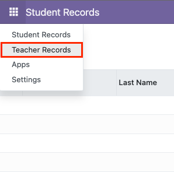

Views
Let's go frontend with views! Simply put, they are pages pertaining to a module. A module can have many views that can display different layouts or how views are restricted to certain users.
In Odoo, these are defined in XML files rather than in HTML or any derivative of.
The __init__.py file (in root)
Unlike the previous section, the views folder only consists of XML files without any manifests files. They are instead managed in the root __manifest__.py file of your module.
For a scaffolded model, a snippet of this manifest file is shown below:
# always loaded
'data': [
# 'security/ir.model.access.csv',
'views/views.xml',
'views/templates.xml',
],
In the instance you'll implement more views (or XML files) within the views folder of your module, be sure to add these in your root __manifest__.py file of your module.
Sidenote, you can also notice the commented CSV file, which will be discussed in the next section.
From this point forward, we will be referring to the views folder of your module.
The views.xml file
Similar to the boilerplate models.py file that we discussed in the previous section, we'll also be working with this provided boilerplate file for our views. Of course, you can modularize your views and menu items in separate distinct XML files, but you should double-check the root __manifest__.py file to ensure that they are included!
Anyways, these views will always be defined inside an <odoo> tag along with closing it with an </odoo> tag at the end of the XML file.
Creating Views
A view comprises of this general syntax:
<record model=<model_name> id=<view_id>>
<field name=<field_name> type=<type>
</record>
In the <record> tag, both the model and id tags are required. The id tag is usually the name of a particular view
The model attribute
The following is a list that can be attributed in this attribute:
-
ir.ui.view- This is the model for views. It is used to define the view itself and is the most commonly used model. -
ir.action.act_window- This is the model for window actions (opening a model in a certain view) -
ir.acti\ns.server- This is the model for server-side actions (executing a Python function) -
ir.actions.client- This is the model for client-side actions (executing a JavaScript function) -
ir.ui.menu- Model for menu items -
ir.model.access- This is the model for access rights (like read/write/create/delete rules)
The first two are the most commonly used for creating views.
(Finally) Creating a View
From our teacher model example, we want to create a list view. This view will be then having the model ir.ui.view and the id as teacher_tree_view. The field names are respective of the attributes we defined in the previous section.
<record id="teacher_tree_view" model="ir.ui.view">
<field name="name">teacher.teacher.list</field>
<field name="model">teacher.teacher</field>
<field name="arch" type="xml">
<tree string="Teacher List">
<field name="employee_ID"/>
<field name="lname"/>
<field name="fname"/>
<field name="mname"/>
<field name="title"/>
<field name="college"/>
<field name="department"/>
</tree>
</field>
</record>
Afterwards, we want to create a form view for this model as well where new data can be inputted,
<record id="teacher_form_view" model="ir.ui.view">
<field name="name">teacher.teacher.form</field>
<field name="model">teacher.teacher</field>
<field name="arch" type="xml">
<form string="Teacher Form">
<sheet>
<group>
<group>
<field name="fname"/>
<field name="mname"/>
<field name="lname"/>
<field name="gender"/>
</group>
<group>
<field name="employee_ID"/>
<field name="title"/>
<field name="college"/>
<field name="department"/>
</group>
</group>
</sheet>
</form>
</field>
</record>
Creating Action Opening Views on Models
To open the views we created, we need to create an action that will open the list view. This is done with the ir.actions.act_window model.
<record id="action_teacher_list" model="ir.actions.act_window">
<field name="name">Teacher</field>
<field name="res_model">teacher.teacher</field>
<field name="type">ir.actions.act_window</field>
<field name="view_mode">tree,form</field>
</record>
Creating Menu Items
The Root Menu Item
The root menu item is what appears in the Home Menu found in the top-left corner of our Odoo instance. This is done with the use of a <menuitem /> tag with a required id, name and sequence attribute.
This menu item is uniquely identified with its id attribute appended with a _root suffix.
For instance in our teacher model that we scaffolded,
<menuitem id="teacher_menu_root"
name="Teacher"
sequence="10"/>
You can also uncomment the following line in the scaffolded model, lines 43-46:
<!-- Top menu item -->
<!--
<menuitem name="teacher" id="teacher.menu_root"/>
-->
ｉNoteIn the XML file, the view must come first before the menu item;
<record>before<menuitem>. Think of it as like defining functions in C first before calling them inmain().
Allowing Permissions
In order for the views and menu items to be accessible by you, we go back to the __manifest__.py file,
# always loaded
'data': [
# 'security/ir.model.access.csv',
'views/views.xml',
'views/templates.xml',
],
Notice where one of them is commented, 'security/ir.model.access.csv'. This CSV file dictates permissions for the views and menu items which will be discussed in another section.
For now, simply uncomment 'security/ir.model.access.csv' from __manifest__.py of the root of the module so that we can see it appear as a navigatable menu item from the top-left corner of our navigation bar.
Seeing Changes
Just like in Checking Models, you need to restart Odoo in order to see the changes made to your module. After restarting, upgrade the module. You should be either directed to the view of your module or see it in the menu found in the top-left corner of the navigation bar. 